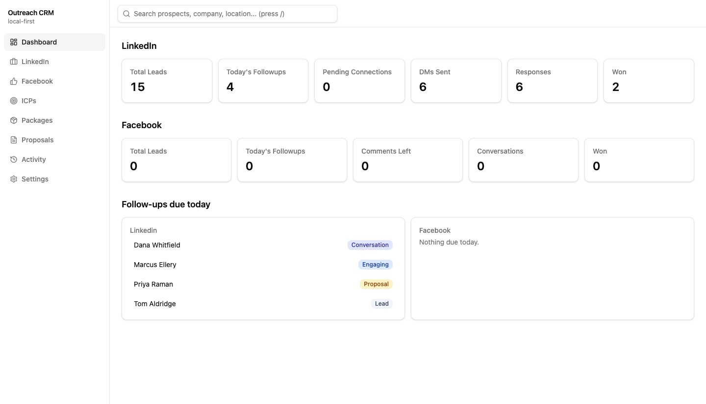
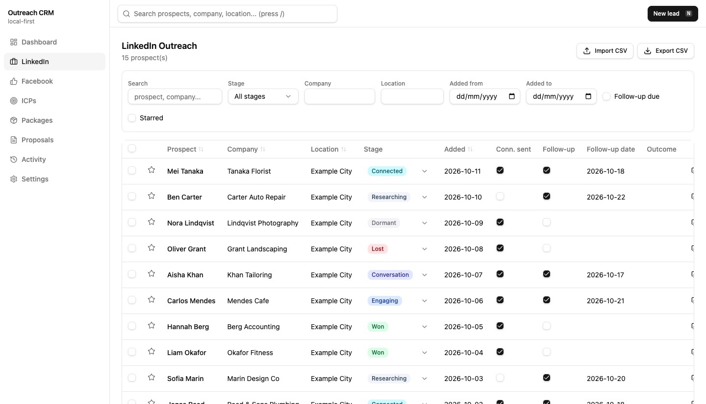

Case study · Developer & content tools
Local-first outreach CRM with self-describing API
A single-port outreach CRM on SQLite with a registry-driven REST API, OpenAPI spec and CSV import, designed so an AI assistant can operate it.
At a glance
- Who it's for
- A solo consultant or freelancer tracking social-network outreach, proposals and follow-ups.
- Core stack
- React, Fastify, SQLite (libSQL), Drizzle ORM
- What sets it apart
- A personal CRM whose API documents itself, so both people and AI assistants can work the same pipeline safely.
What it looks like in use
The dashboard of a personal CRM: how many leads there are, who is at which stage, and who needs a follow-up today.
DashboardSearch
Total leads15
Today's follow-ups4
Won2
LinkedIn leads
Dana Whitfield
Northwind StudioConversation
Northwind StudioConversation
Marcus Ellery
Harbor DentalEngaging
Harbor DentalEngaging
Priya Raman
Lumen LogisticsProposal
Lumen LogisticsProposal
Tom Aldridge
Aldridge PrintLead
Aldridge PrintLead
Export CSVNew lead
Follow-ups due today
Dana Whitfield
Send the proposal summaryDue
Send the proposal summaryDue
Marcus Ellery
Reply to his commentDue
Reply to his commentDue
Tom Aldridge
Send a connection requestDue
Send a connection requestDue
Priya Raman
Check the proposal landedDue
Check the proposal landedDue
Tap a name to open the full recordDetails
Real screens from the working product (sample data)


A day of outreach
-
Maya adds a new contact
She meets someone online and saves their name, company and a note in a quick form.
-
She moves them along the stages
As the chat goes from first hello to a proposal, she updates the stage so nothing is lost.
-
Each morning she sees who is due
The dashboard lists everyone she planned to follow up with today.
-
She finds anyone in a moment
One search box looks through names and companies, so nothing gets lost.
-
Her AI assistant can help too
An assistant can read and update the same records for her, so she does not have to do it all by hand.
The challenge
Social outreach on professional and community networks is often tracked in ad-hoc spreadsheets. Follow-ups slip, and there is no single view of stage, templates or proposals.
Hosted CRMs bring cost, setup and data-residency concerns for a single user. A second requirement is that an AI assistant can read and update the pipeline without touching the database file.
The solution
One Node process serves both a React UI and a Fastify REST API from a single port, storing data in a local SQLite file that migrates itself.
Each outreach channel is declared as a resource definition, and the API, schema endpoints, OpenAPI document, CSV routes and meta map are generated from a registry. The UI offers per-channel tables, record detail pages, a dashboard, an activity timeline, search, follow-ups due today, and ICP, package and proposal modules.
For your technical teamhow it works under the hood
How an assistant discovers and uses the API
Key features
What the system does, as built in the codebase.
- 01
Channel pipelines with stages
Separate lead tables for two social channels, with stage tracking and customizable stage colors.
- 02
Proposal modules
ICPs, service packages and proposals, added in a second migration.
- 03
Self-describing API
A meta endpoint and an OpenAPI 3.1 spec list every resource and field.
- 04
Follow-up engine
A cross-resource query of items due today.
- 05
CSV import and export
Available for every resource.
- 06
Backup and restore
Back up and restore the database file.
- 07
Search, timeline and dashboard
Global search, an activity timeline and dashboard metrics.
- 08
Productivity UI
Data table, filter bar, bulk actions, quick-add dialog and keyboard shortcuts.
How it fits together
From a resource definition to an API that people and assistants share.
- React UIVite + Tailwind
- Fastify APIone port, static + REST
- Resource registrydefinitions drive routes
- Drizzle ORMtyped queries
- SQLite filelocal, backup/restore
- Assistants and scripts discover resources via the meta and OpenAPI endpoints, then call the same REST routes as the UI.
Implementation notes
Engineering decisions worth knowing about.
Registry pattern
A new outreach channel is one resource definition added to a registry list, so generic routes, schema, OpenAPI and CSV endpoints need no per-channel code. A table migration is still needed.
Shared CRUD layer
A generic CRUD layer is shared by all resources, with Zod schemas per module.
Typed data access
Drizzle ORM over libSQL, with SQL migrations applied automatically.
Uniform responses
All endpoints use one success and error response envelope.
Single-process deployment
The backend serves the built frontend, so there is one thing to run.
Component primitives
Radix UI primitives with Tailwind 4 build the interface.
Technology stack
Taken from the project's dependency and config files.
- Frontend
- React 19
- React Router
- Tailwind CSS 4
- Radix UI
- Vite
- Backend
- Node.js
- TypeScript
- Fastify
- Zod
- Data
- SQLite via libSQL
- Drizzle ORM
- Tooling
- oxlint
- tsx
For your technical teamtechnology layers
Technology layers, interface to tooling
Business value
What the system enables. No numbers are claimed.
- Gives a solo operator a private pipeline with no subscription or hosting.
- Surfaces what is due today across channels so follow-ups are less likely to slip.
- Lets an AI assistant automate record keeping through a documented API.
- Makes adding a new outreach channel a small change.
Need a system like this built?
Tell us what it needs to do and we will scope it with you on a call.